Featured projects across structural design, renovations, and forensic evaluations — from Miami to Qatar.
A 12-building panelized cold-formed steel community where TCE carries the structure, the MEP, the civil package — and the county code inspections.
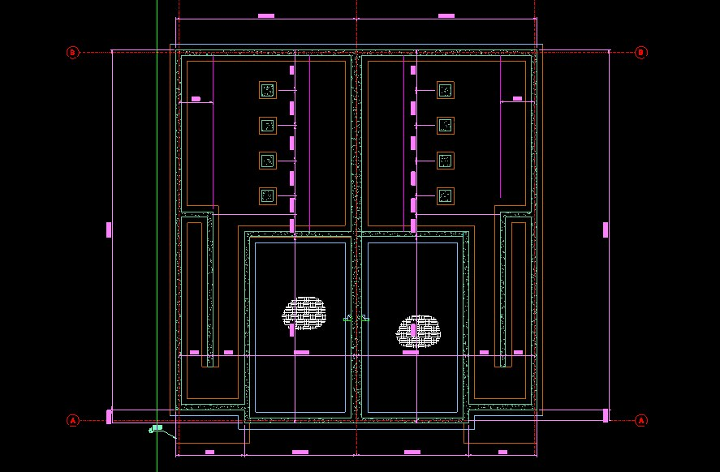
Machine-fabricated FRAMECAD panels demand shop-level precision before steel is rolled, the attached units required rated fire/demising walls, and field MEP trades notched studs that had to be engineered back into compliance — all under an active county inspection program.
Five levels of multifamily over ground-floor retail with a courtyard and a vehicular underpass — one firm carrying both the structure and the complete MEP design.
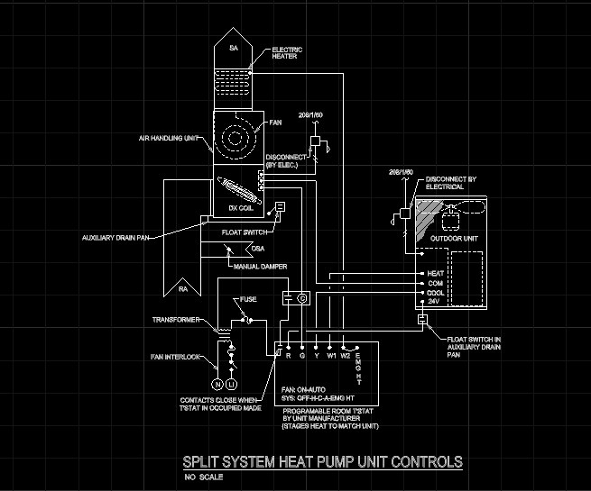
A large mixed-use block combining apartment levels, retail spaces, and a drive-through underpass needs structure and building systems designed as one coordinated whole — and a national GC pricing a GMP at 50% construction documents needs drawings that hold up.
A four-story Florida threshold building on load-bearing cold-formed steel with hollow-core plank floors — TCE both engineered it and inspected it.
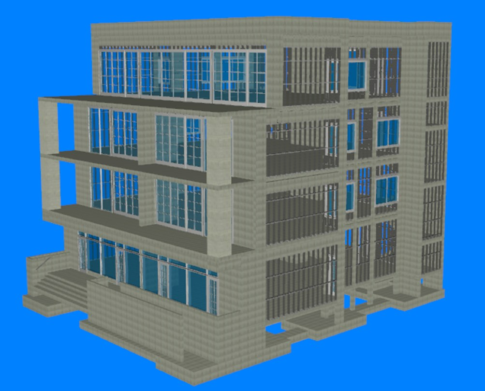
The project changed structural engineers mid-stream, runs load-bearing light-gauge steel under precast hollow-core planks — an unforgiving combination for tolerances — and triggers Florida’s threshold building statute requiring a formal inspection program.
A historic-district garden venue on Biscayne Boulevard — greenhouse, grand shade structure and all — engineered for 175 mph hurricane winds.

Miami’s high-velocity hurricane zone puts every canopy, greenhouse pane, and gate under 175 mph design loads, while the Historic & Environmental Preservation Board scrutinizes everything visible — and multiple vendor-delegated structures still have to tie into one sealed design.
A complete delegated cold-formed steel package — every wall panel and sixteen truss types — delivered straight to the fabricator’s roll-former.

The panel shop’s line only moves as fast as its sealed engineering: three floors of exterior and interior wall panels, parapets, and cold-formed trusses — including deep box-beam conditions — all needed calculations, shop drawings, and machine files on a fabrication schedule.
A hybrid structure — hot-rolled steel frame carrying cold-formed trusses and joists — for a two-level auto storage facility on deep foundations.

Long clear spans for vehicle storage want heavy structural steel; economy wants light cold-formed framing everywhere else; and the soils demanded deep foundations — the design had to blend all three into one buildable, permittable package.
A design-build custom home in cold-formed steel with steel transfer beams and a purpose-engineered stem-wall foundation.

The builder’s CFS delivery model needed structure that follows the panel system — but the architecture demanded transfer beams at multiple grids, a balcony, and a stem-wall condition that standard details didn’t cover.
A hillside custom home where the site works as hard as the house — engineered retaining walls up to 18 feet tall under a cold-formed steel frame.

A steep mountain lot means the foundation is really a retaining structure: basement and site walls from 5 to 18 feet, a retained driveway, and a multi-level plan — plus the owner wanted structure and mechanical design under one roof.
The fully-counted house: 3,965 square feet where every panel, joist, and truss was engineered, scheduled, and tallied before fabrication.

Panelized construction succeeds or fails on completeness: a walk-out basement home with 16.5-foot retained walls, over a hundred trusses, and two HVAC systems has no room for ‘detail it in the field.’
A ground-up convenience market where TCE carried the building structure and the site’s erosion-control and retaining-wall package.

A fuel-market site on Tunnel Road needed more than a building: engineered gabion, geogrid, and concrete retaining walls, sediment and erosion control to city and state standards, and a panelized CFS structure — all through municipal plan review.
A prefab-ready cold-formed home engineered to its own shipping limits: no panel over 300 pounds, nothing longer than a 40-foot truck bed.

Prefabrication moves constraints upstream: every wall panel and truss had to respect the truck bed and a two-man lift, floor trusses bear on CMU piers, and the whole package — calcs to machine files — had to arrive fabrication-ready.
Ground-up structural design for a multi-cabin community — from helical pile foundations to roof truss layouts, four cabin types deep.

Cabins on piles look simple until the loads meet the soil: each of four cabin types needed engineered girder-to-pile connections, coordinated pile schedules, and framing the field could repeat reliably.
A nine-unit FHA-financed apartment building where TCE reviewed every discipline’s sheets — architecture, civil, landscape, MEP, and structural — before they went forward.

An entitled multifamily project moving through rezoning and FHA financing needed its 80% design set checked as one coordinated whole — five disciplines’ drawings, HUD durability standards, and a municipal approval track all had to line up before permitting advanced.
Forty-six buildings, ninety-two units, one question: what did Hurricane Ian do — and what was already there from Irma?
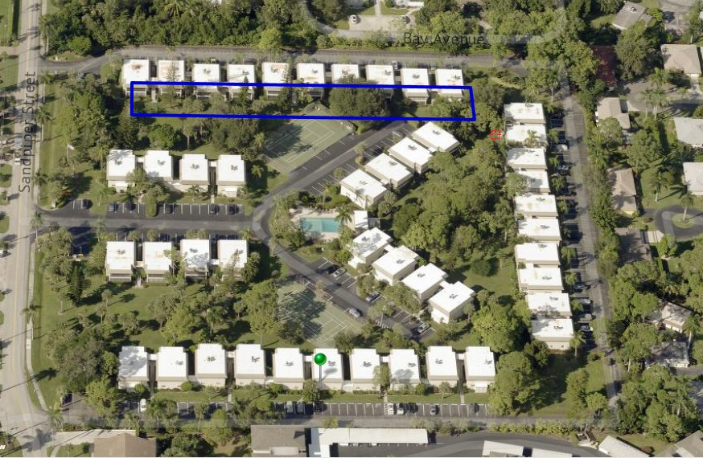
A 1976 villa community took Hurricane Ian’s wind field for twelve continuous hours — but the carrier’s side pointed to pre-existing conditions from Hurricane Irma. Causation had to be separated building by building, not argued in general.
A 1920 heavy-timber roof survived a century — then hail and wind started a ten-month chain that ended in collapse. TCE traced every link.
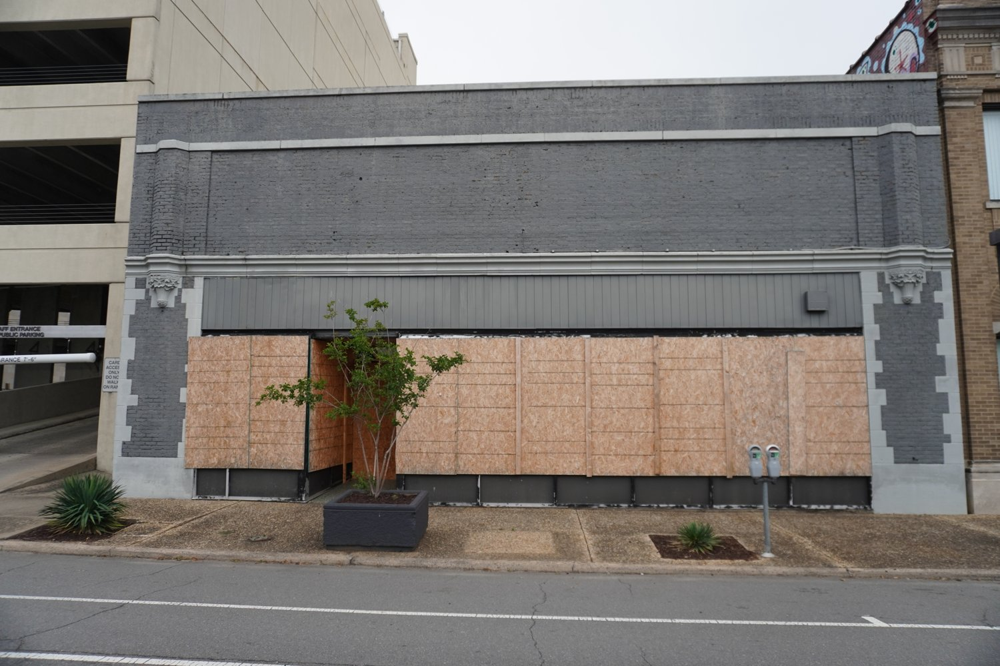
A partial structural collapse ten months after a hail-and-wind event invites the easy defense: rot, age, wear-and-tear. Proving the storm started the failure chain required physical evidence, not narrative.
When hail punches clean through a metal roof, the argument is over — if the documentation is airtight. TCE made it airtight.
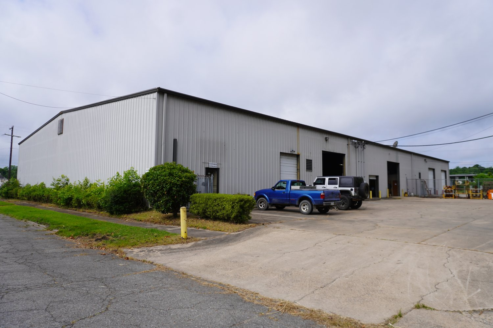
A steel-framed manufacturing facility took 1.75-inch hail with gusts to 56 mph. The evaluation had to fix the pre-loss condition precisely and correct a mischaracterization of the roof geometry that shaped the claim.
The honest answer was the powerful one: the wind couldn’t have done it — the hail did, and the numbers prove both halves.
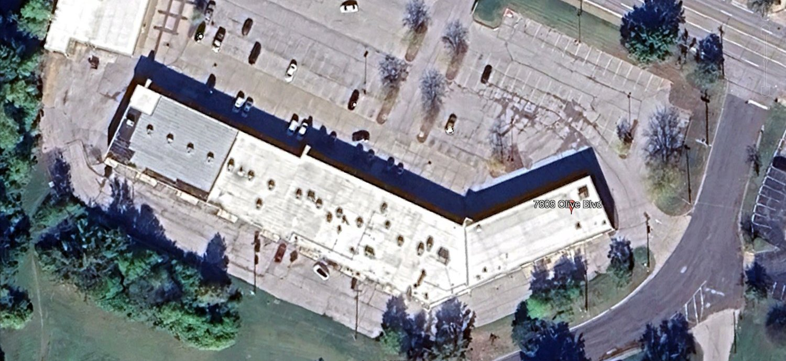
After the May 2025 St. Louis hail-and-tornado outbreak, a multi-tenant commercial roof showed widespread damage — but attributing everything to wind wouldn’t survive scrutiny. The mechanics had to be separated quantitatively.
A pre-loss inspection six months before the hailstorm gave this claim what most never have: a documented before. TCE built the after, test square by test square.
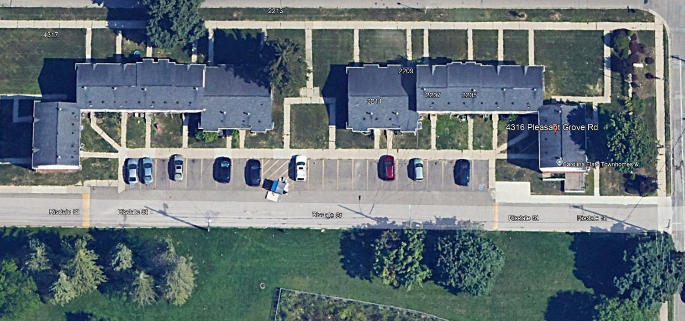
Five apartment buildings with roofs of different ages — one barely a year old, others fifteen — took radar-verified hail. Each building needed its own evaluation, and the directional evidence had to match the storm physics.
A beachfront restaurant, Hurricane Ian, a denied claim, and the carrier’s own engineer on the other side — TCE’s report is the counterweight.
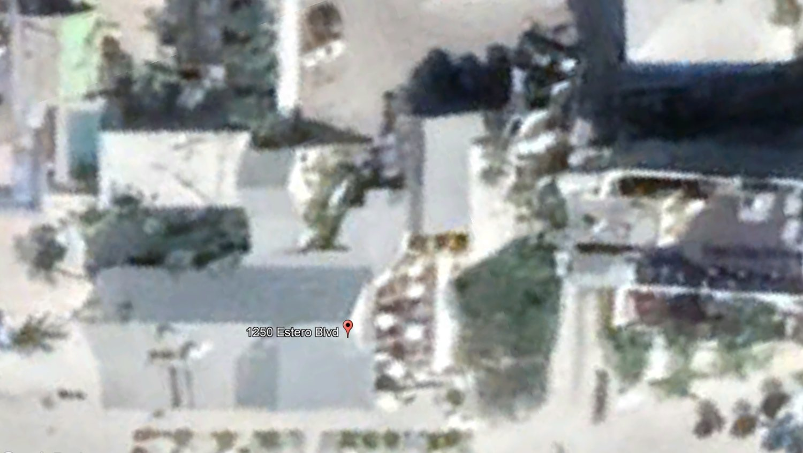
Ian’s combined wind and surge devastated a two-venue hospitality property; the claim drew a denial and a reservation of rights, with the carrier’s engineering report anchoring the other side. The rebuttal had to be stronger than the original.
Collapse or decay? On a three-section Miami commercial building, that one word decides coverage — TCE documented the answer at exhibit scale.
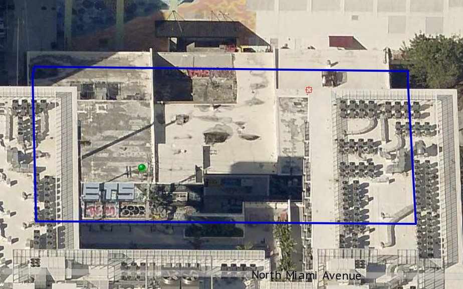
A structural failure in an older commercial building put the claim squarely between the policy’s collapse provision and its decay-and-deterioration exclusion — with the building shored, the clock running, and the pre-loss condition in dispute.
After Ian flooded the ground floor, TCE did both jobs: documented what the storm did, then redesigned the building systems so it can’t happen again.

Hurricane Ian’s surge inundated the ground floor, taking the electrical, fire-alarm, and pump systems that sat below the base flood elevation. The association needed the loss documented — and needed the rebuilt systems out of harm’s way.
A commercial hail claim evaluated with site-specific weather analytics and a causation opinion that survived tracked technical review.
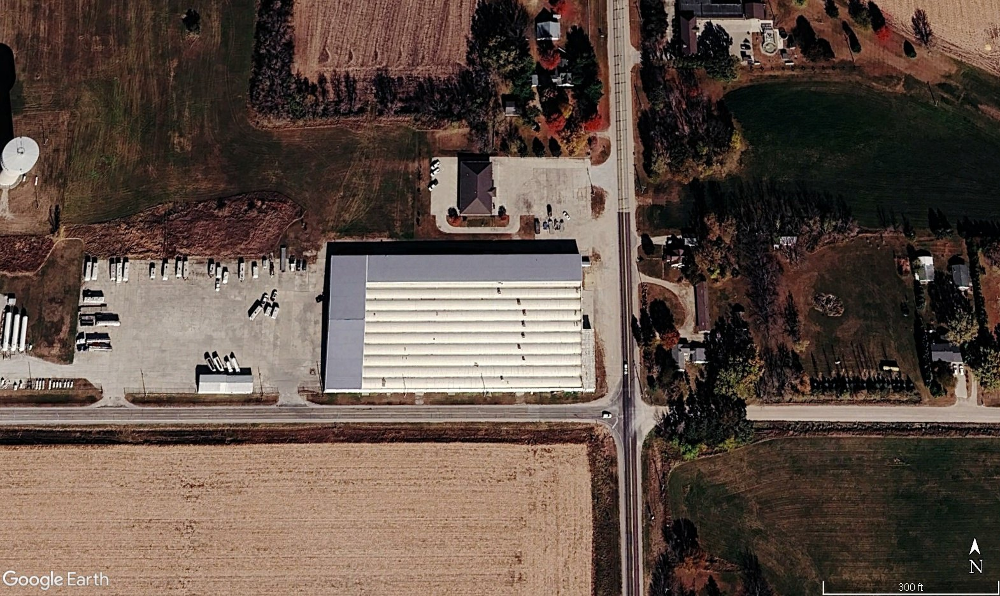
Hail claims live and die on method: the evaluation paired on-site documentation with weather analytics for the date of loss and a two-decade roof history — then stood up to round after round of technical review.
An evaluation that went the distance — from site documentation to a sworn engineer’s declaration in litigation.
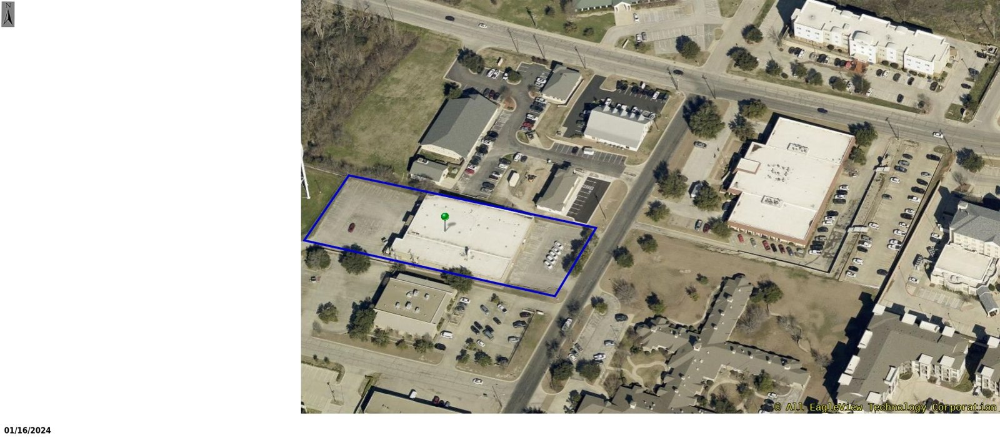
Some evaluations end with a report; this one was tested in litigation, where the methodology, the meteorological record, and the engineer’s willingness to stand behind the findings all came under scrutiny.
A roofing-product failure case built the way testifying work should be: court-approved testing protocols, control samples, and ASTM-grounded opinions.

A premature roof underlayment failure with resulting water intrusion put product performance itself on trial. Expert opinions in that arena survive only if the testing methodology is beyond reproach.
A full-building photographic survey of an early-childhood facility — 325 frames in a single documented day.
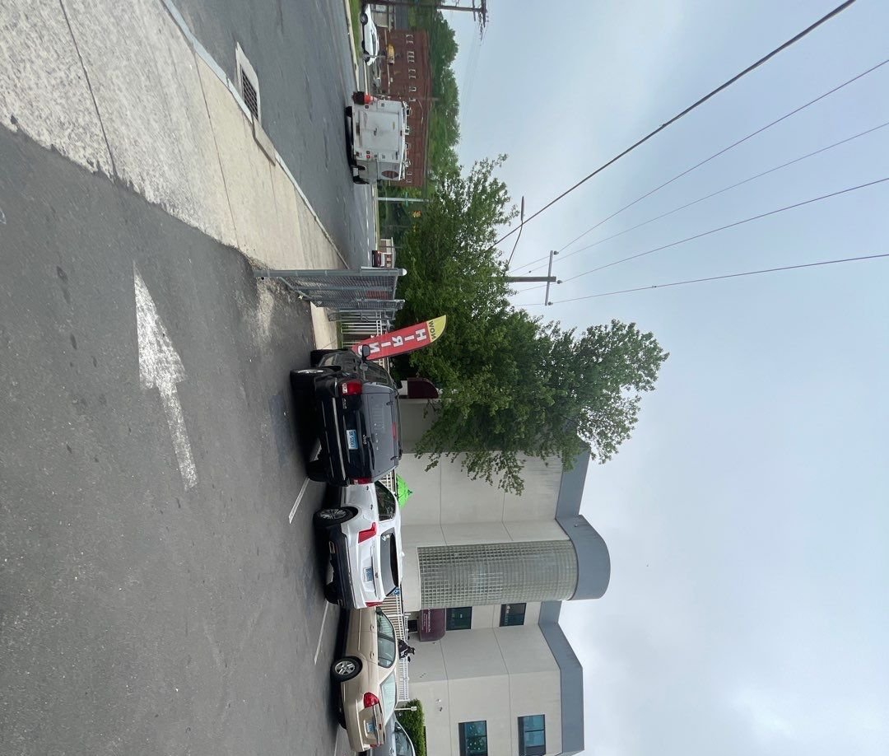
A child development center with suspected water intrusion needed its condition captured completely and quickly — the kind of building where documentation discipline matters more than drama.
An oceanfront tower, Hurricane Irma, and a competing engineering report on the other side — documented floor by floor, ground through roof.

A high-rise on the Atlantic took Hurricane Irma’s winds, and the claim record already contained an opposing engineering report with full floor-by-floor attachments. TCE’s evaluation had to meet that documentation standard level for level — tower, water suites, cabanas, and beach structures.
When a February freeze hit an entire county’s building portfolio, one report wasn’t enough — seventeen facilities, two report phases, eleven photo appendices.
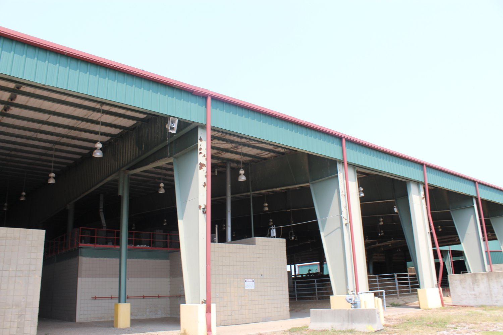
The February 2021 winter storm damaged buildings across a Mississippi county’s entire portfolio — courthouse, justice complex, library, fire station, recreation centers, and more — and the claim went to formal insurance appraisal, where every building needed its own defensible record.
A Georgia clubhouse, a state-of-emergency cold snap, and a claim that went federal — TCE’s evaluation is holding its ground through depositions.
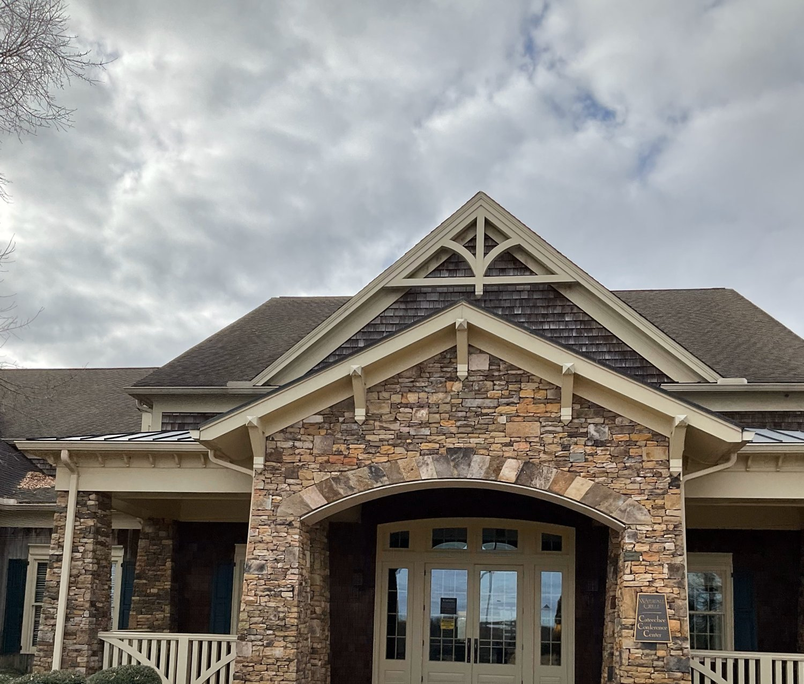
A hard-freeze event during a declared state of emergency left a golf clubhouse water-damaged, and the dispute escalated into federal litigation with opposing expert reports — the evaluation had to survive disclosure, discovery, and deposition.
Tell us about your project or claim and we’ll get back to you fast — clients say responsiveness is what sets us apart.
Get My Proposal →